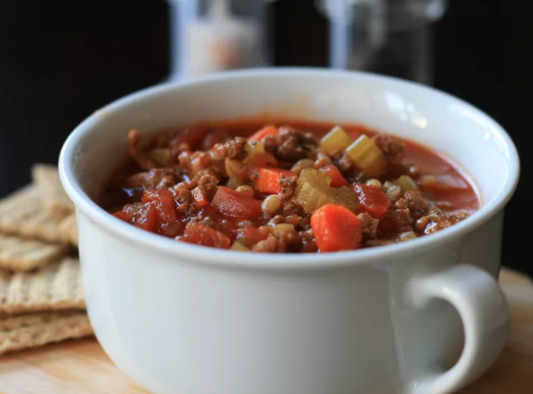

HamburgerSoup

Desciption
Easy and delicious soup with a nice thickness.
You can make it in the Instant Pot® or on the stovetop.
When this cools, it will be very thick, but it thins out when reheated. Freezes very well.
Ingredients
- 1 ½ pounds ground beef
- 1 medium onion, finely chopped
- 3 (14.5 ounce) cans beef consomme
- 1 (28 ounce) can diced tomatoes
- 2 cups water
- 1 (10.75 ounce) can condensed tomato soup
- 4 carrots, finely chopped
- 3 stalks celery, finely chopped
- 4 tablespoons pearl barley
- ½ teaspoon dried thyme
- 1 bay leaf